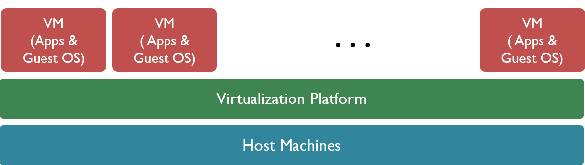

class: center, middle # IEMS 5780<br/>Building and Deploying Scalable<br/>Machine Learning Services ### Lecture 12 - Deploying & Scaling Machine Learning Applications #### Albert Au Yeung<br/>29nd November, 2019 --- class: center, middle # Scaling Network Applications --- # Scaling Network Applications - What does **scalable** mean? We need to understand what is **scalability** before we can build something that is scalable. - Is **scalable** the same as: - High availability (always available to the users)? - High performance (handle every request very quickly)? - Cost effective (low cost to build a system that serves many users)? --- # Scalability ### Why should online services be scalable? - Consider what would happen when a lot of users are browsing your website, using your app, or accessing your APIs - Growth in **traffic** and **data** - Our objectives: - To keep the service **available** - To keep the **performance** of the system at a certain level - To keep it **cost-effective** to operate the service --- # Scalability ### Consider the following systems: - Common client-server system with a **database** - Clients are distributed **geo-graphically** - Different **types** of clients (e.g. Web, mobile, API) - Different **kinds** of requests (e.g. retrieval, data submission, image uploading, file editing, video encoding…) - Different kinds of **data** (e.g. relational data, text, images, videos…) - ... --- # Scalability ### Scalability does **NOT only** mean: - Improving your codes - Using a more powerful machine - Adding more RAMs ### Scalability is about - Identifying and mitigating bottlenecks - Considering the whole architecture of the system in order to engineer a solution --- # Scalability ### Scalability is **NOT** equal to - Performance - Choosing a particular operating system - Choosing a particular programming language - Choosing a particular storage technology --- # Scalability - Related Concepts ### High Availability (HA) - A system is **highly available** if it is operational for most of the time in a specific period (e.g. a year) - For example, if a service has 99.9% availability, it is expected that the service will be operational for 24 x 365 x 0.999 = 8751.24 hours in a year (also known as **up time**) - Ref: [Slack's Service Level Agreement (SLA)](https://get.slack.help/hc/en-us/articles/204113126-Service-Level-Agreements-SLA-) - **Principles** of HA: eliminate single points of failure, avoid data loss in case of failure, and detection of failures as they occur - A highly available system will be a distributed one, hence usually scalable --- # Scalability - Related Concepts ### System Performance - How efficient is the system in performing a task given certain amount of computing resources (CPU time, memory, etc.) - Using a language that **executes code faster** at runtime - Using a faster sorting **algorithm** - **Optimizing your SQL queries** to shorten the time to retrieve data from the database - ... --- # Scalability - Definition ### Two common definitions/views of "scalability": 1. Scalability is the ability to handle increased workload<br/>(without adding resources to a system)<br/><br/> 2. Scalability is the ability to handle increased workload by repeatedly applying a cost-effective strategy for extending a system’s capacity <br/><br/> Reference: Charles et al., 2006. On System Scalability.<br>[http://resources.sei.cmu.edu/library/asset-view.cfm?assetid=7887](http://resources.sei.cmu.edu/library/asset-view.cfm?assetid=7887) --- # Scalability - Definition ### The first definition is of less interest to us in this course - It does NOT focus on whether the system can be improved / extended when the workload increases - It focus on whether the system has good performance on a large problem, not on how the system can be scaled ### Instead, we are more interested in the second definition, in particular: - **"repeatedly applying a cost-effective strategy"** to extend the system’s capacity --- # Scalability - Definition ### "Repeatedly applying a cost-effective strategy" - We are **NOT** interested in **one-time increase** in capacity, such as: - replacing a O(n2) algorithm with an O(n log n) one - coding in a language which produces programs that run faster<br/><br/> - We are **NOT** interested in solutions that requires **a relatively high cost**, such as: - replacing a 4-core CPU within a 16-core CPU - building a super-computer using advanced HPC technologies --- # Horizontal vs. Vertical ### Vertical scaling – also known as **"scale UP"** - Add resources to a single node in a system - E.g. adding CPU or RAMs, increasing the disk size of a DB server, etc. ### Horizontal scaling – also known as **"scale OUT"** - Add more nodes to a system - Systems are designed to be distributed - E.g. adding more servers to a cluster of computers --- # Scaling Out ### In order to achieve scalability, we usually aim to build a system that can easily **scale-out (horizontally)** - Allow distributing workload easily - If you scale-up, you will quickly reach a **limit** (either technically or financially) - Trade-off: you need something to **manage** your large number of nodes --- # Scaling Out - Have you ever imagined how many servers are supporting **Google** or **Facebook**? - Let's take a look at Facebook's report of [Fourth Quarter and Full Year 2017](https://www.prnewswire.com/news-releases/facebook-reports-fourth-quarter-and-full-year-2017-results-300591468.html): <br/><hr><br/> <center> </center> --- # Scaling Out - How more servers help you to scale? <center> </center> --- class: split # Scalability .column-left[ <center> </br><br/>Scalability Rules: 50 Principles for Scaling Web Sites Chapter 2 (Figure 2.2) </center> ] .column-right[ - Principles for distributing workloads in a system 1. **Horizontal Duplication**<br/>(Introduce redundancy) 2. **Split by Functions**<br/> (Split by verbs or nouns) 3. **Split by Storage**<br/> (Formulaic split: split database based on one or more columns) ] --- # 1. Horizontal Duplication - When multiple instances of your service can operate **independently**: <center> </center> --- # 1. Horizontal Duplication - When the **read-to-write ratio** of your database is high (e.g. 5:1): - For many applications, the database is read much more frequently than is written to - Consider how often your post a new status on Facebook vs. how often you read your news feed - Simple way to scale: have multiple **read-only** database to handle the many read requests <center> </center> --- class: equal-split # 2. Split by Functions ### Scaling through distribution based on the **separation of distinct / different functions** (verbs) and **data** (nouns)<br/><br/> .column-left[ ### By functions (verbs) - Registration - Authentication / Login - Search - Recommend - Resize images ] .column-right[ ### By data (nouns) - User profiles - Items for sale - Product catalogues - Images ] --- # 3. Split by Storage - Also known as **sharding** - take a data set and partition it into multiple parts based on some rules - Consider an online services that serves multiple enterprise users (each company has an account and data are not supposed to be seen by another company) - You are not going to combine data from different companies in any function - You can have dedicated servers storing data for each company --- # Summary ### The keys to build scalable systems are: - Identifying **bottlenecks** of the system - **Horizontal duplication**: allow scaling to be done quickly - **De-coupling**: let loosely-coupled modules interact through simple and well-defined interfaces --- class: center, middle # Load Balancing --- class: split # Load Balancing ### The act of distributing workloads across multiple computing nodes<br/></br> .column-left[ <center> </center> ] .column-right[ - Avoid overloading a single node - Maximise utilization of different nodes - Optimise usage of resources - Increase reliability and availability ] --- # Load Balancing ### Different ways to implement a load balancer - DNS / Hardware / Software - Implement it on different networking layers - Algorithms: random / Round-robin / dynamic scheduling --- # Load Balancing Algorithms - **Random** - **Round-Robin** - Distribute load equally by using a rotating scheme - **Weighted Round-Robin** - A performance weight is assigned to each server - **Least Connections** - Sends requests to a server with the fewest number of connections - **Fastest Response Time** - Select the server that responded in the shortest time --- # Server Health Checking - A load balancer might need to check whether the servers are operating normally and are able to give responses. - How can we check if one of the servers has died? 1. **Passive**: **Observe** the **network traffic** 2. **Active**: **Probe** the server for a **quick response** - What are the pros and cons of these two? - How can health checking be done? --- # Server Health Checking - **Ping** - Send an ICMP message to the server and check for response - **TCP Connection** - Attempt to establish a TCP connection to the server (on port 80) - **HTTP GET (Header)** - Check the status code of a GET request - **HTTP GET (Content)** Check the content returned by the server for a GET request<br/><br/> - **Question**: What are the limitations of the first three methods? --- # DNS - DNS stands for **Domain Name System** - A **directory service** of the Internet <center> </center> --- # DNS Load Balancing ### A simple way of implementing load balancing - Create two or more **“A” records** in the DNS zone - The DNS server sends the client a list of records in **random order** or in a round-robin fashion - The client attempts to connect to the application server using the **first IP address** in the list --- # DNS Load Balancing ### What are “A” records? - Address record: mapping a domain name to an IPv4 address ### Other records: - AAAA: domain name to IPv6 address - CNAME: alias of a domain name - MX: mail exchange (identifies the mail server of the domain) - NS: name server record --- # Round-robin DNS Load Balancing <center> </center> --- # DNS Load Balancing - An Example ```bash $ dig www.youtube.com ; <<>> DiG 9.9.5-3ubuntu0.5-Ubuntu <<>> www.youtube.coma ;; global options: +cmd ;; Got answer: ;; ->>HEADER<<- opcode: QUERY, status: NOERROR, id: 33788 ;; flags: qr rd ra; QUERY: 1, ANSWER: 5, AUTHORITY: 0, ADDITIONAL: 1 ;; OPT PSEUDOSECTION: ; EDNS: version: 0, flags:; udp: 512 ;; QUESTION SECTION: ;www.youtube.com. IN A ;; ANSWER SECTION: www.youtube.com. 21423 IN CNAME youtube-ui.l.google.com. youtube-ui.l.google.com. 146 IN A 64.233.187.190 youtube-ui.l.google.com. 146 IN A 64.233.187.136 youtube-ui.l.google.com. 146 IN A 64.233.187.91 youtube-ui.l.google.com. 146 IN A 64.233.187.93 ``` --- # DNS Load Balancing ### Simple, but a few limitations: - **Stickiness**: It takes time to propagate changes in DNS records adding or removing servers can be slow - Loading can NOT be balanced accurately due to **DNS caching** (e.g. when a lot of users are from the same ISP) - It does NOT take into account transaction time, server load, network congestions, etc. - NO **fault tolerance** (DNS server does not know if a server is operating or not) --- class: equal-split # DNS Load Balancing .column-left[ - While having some limitations, DNS load balancing is an important method for achieving **availability** - The **only way** to divert traffic to **different data centres** ] .column-right[ <center> </center> ] --- # Hardware / Software Load Balancing - Load balancing can be done at the different layers ### OSI model Layer 4 (Transport Layer) Load Balancing - Relatively simple - Balancing server load without inspecting the content of messages - Distribute traffic based on servers’ response time - Routing is based on inspecting the first packet of the data stream --- # Layer 4 Load Balancing <center> </center> --- # Layer 4 Load Balancing ### What are the advantages of Layer 4 Load Balancing? - **Simple**: easy to implement - **Efficient**: load balancer only inspect the **first packet** ### However - It CANNOT maintain application session information - It CANNOT route requests to different servers **dynamically** based on their content (e.g. requesting static content vs. dynamic content) --- # Layer 7 Load Balancing ### Layer 7 (Application Layer) Load Balancing - **Application-level** load balancing - Parse requests in the **application layer** (e.g. HTTP), and distribute them to servers **based on the content** of the request (e.g. the URL or the cookie) - Relatively **high overhead** in parsing the metadata - Mostly **HTTP** (because of the popularity of Web apps) --- # Layer 7 Load Balancing <center> </center> <br/> Ref: Cardellini, Casalicchio, Colajanni, and Yu. 2002. The state of the art in locally distributed Web-server systems. ACM Computer. Survey, 34, 2 (June 2002), 263-311. --- # Layer 7 Load Balancing ### Characteristics of Layer 7 Load Balancing - More CPU-intensive (e.g. for parsing HTTP content) - Can also apply compression, encryption or caching on the content to be delivered - Does not require all servers in the backend to have serve the same content (compare with Layer 4 load balancing) Layer 7 load balancers are also called **Application Delivery Controllers** --- # Layer 7 Load Balancing - One important ability of a layer 7 load balancer is **SSL termination** - The load balancer has to be able to decrypt the request in order to **inspect the content** - It therefore must be configured with **a valid SSL certificate** <center> </center> --- class: middle, center # Caching --- # Caching * **Cache** is a **temporary** data storage that stores data for **quick retrieval** in the future * Mostly implemented as a key-value store, where the unique key can be used to retrieve the value at `O(1)` time * Cache is usually **small** (RAM is expensive!) * Cache can be persistent, if it also stores the current state into some persistent storage (e.g. the hard disk) --- class: equal-split # Caching using Redis * **Redis** can be used as a cache using it's key/value store function ```python # import redis from redis import StrictRedis # StrictRedis offers API official Redis commands # Establish a connection to redis on localhost r = StrictRedis('localhost') # Set the value of a key r.set('test_key', 'test_value') # Get the value of a key # value will be None if no such key is found in redis value = r.get('test_key') ``` --- # Caching ML Model Predictions * Sometimes, generating a prediction takes time and computing resources * If it is possible that the **same inputs** will be received, we can **cache predictions** to respond more quickly ```python # Let's assume x is a feature vector # And let's assume we have a hash function that hash the vector into a string input_hash = hash_vector(x) # Attempt to retrieve cached prediction cached = r.get(input_hash) if cached is not None: return cached else: # Submit x to the model # ... ``` --- # Cache Replacement Algorithms * **Hit** (found) vs. **Miss** (not found) * To make efficient use of a cache, we want to have **high hit rate** * We need to determine **what** should be cached * **Ideal case**: discard the information that will NOT be needed for the **longest time** in the future * Some commonly used **algorithms**: - FIFO (First-in-first-out) (i.e. a queue) - LRU (Least recently used) - LFU (Least frequently used) * More can be found at [https://en.wikipedia.org/wiki/Cache_replacement_policies](https://en.wikipedia.org/wiki/Cache_replacement_policies) --- class: center, middle # Cloud Computing --- # Cloud Computing * What is **cloud computing**? <br/><br/> <center> <img src="img/l13-cloud.png" width="45%"/> </center> --- # Servers * What people do when they need to run a network application? <center> <br/><br/> THe first Web server (a NeXT computer) </center> --- # Data Centres * What people do when they need to run a network application? <center> <img src="img/l13-datacentres.png" width="80%"/> <br/><br/> Data centres </center> --- class: split # Data Centre Services .column-left[ <center> <img src="img/l13-server-architecture.jpg" width="80%"/> </center> ] .column-right[ Figure from "Cloud Computing - A Primer - The Internet Protocol Journal", The Internet Protocol Journal, Volume 12, No.3 ] --- # Data Centre Services <center> <img src="img/l13-server-architecture-2.jpg" width="70%"/> <br/><br/> Figure from "Cloud Computing - A Primer - The Internet Protocol Journal", The Internet Protocol Journal, Volume 12, No.3 </center> --- # Cloud Computing * **NIST** (National Institute of Standards and Technology) - “Cloud computing is a model for enabling **ubiquitous**, **convenient**, **on-demand** network access to a shared pool of configurable **computing resources** (e.g., networks, servers, storage, applications, and services) that can be rapidly provisioned and released with minimal management effort or service provider interaction.” * Ref: [http://www.nist.gov/itl/cloud/](http://www.nist.gov/itl/cloud/) --- class: split # Cloud Computing .column-left[ ### **John McCarthy**<br/>(who invented the term "Artificial Intelligence") * The first to suggest publicly (in 1961 in a speech given to celebrate MIT's centennial) that computer time-sharing technology might result in a future in which computing power and even specific applications could be sold through the utility business model (like water or electricity). ] .column-right[ <center> <img src="img/l13-mccarthy.jpg" width="80%"/> </center> ] --- # Cloud Computing <center> </center> --- # Cloud Computing Characteristics <center> <img src="img/l13-cloudservice.png" width="85%"/> </center> --- # Infrastructure-as-a-Service (IaaS) * To provision **processing**, **storage**, **networks**, and other fundamental **computing resources** where the consumer is able to deploy and run arbitrary software (e.g. virtual machines) * Consumers do not manage or control the underlying cloud infrastructure but have control over **operating systems**, **storage**, and **deployed application**s; and possibly limited control of select **networking components** <center> <img src="img/l13-iaasproviders.png" width="90%"/> </center> --- # Platform-as-a-Service (PaaS) * To deploy onto the cloud infrastructure **consumer-created or acquired applications** created using programming languages, libraries, services, and tools supported by the provider. * Consumers have control over the **deployed applications** and possibly **configuration settings** for the application-hosting environment. <center> <img src="img/l13-paasproviders.png" width="90%"/> </center> --- # Software-as-a-Service (SaaS) * To use the provider's **applications** running on a cloud infrastructure, which are accessible from various client devices through either a thin client interface. * Consumer do not manage or control the underlying cloud infrastructure including network, servers, operating systems, storage, or even individual application capabilities <center> <img src="img/l13-saasproviders.png" width="90%"/> </center> --- class: middle, center # Enabling Technologies of Cloud Computing --- # What Makes Cloud Computing Possible? <center> <img src="img/l13-cloud-enabling-tech.png" width="90%"/> </center> --- # Virtualization Technologies * **Virtualisation** divides the resources of a computer into multiple **isolated** execution environments, by applying one or more concepts or technologies such as hardware and software partitioning, time-sharing, partial or complete machine simulation, emulation, etc. <br/><br/> <center>  </center> --- # Hypervisors * **Virtualisation** is enabled by software called **hypervisors** * What does a hypervisor do? - Provide **isolated execution environment** for each VM - Manage **access of physical resources** by each VM * Two types of hypervisors: <br/><br/> <center> </center> --- # Hypervisors * Hypervisors get its name because it is conceptually **one level higher than a supervisory program (part of an OS)**. * **Type 1** hypervisors run directly on bare metal instead of within an operating system environment - provide the best performance, availability, and security of any form of hypervisor. * **Type 2** hypervisors run within an operating system environment running on the host computer - typically referred to as hosted virtualization --- # Cloud Management Systems * A layer above hypervisors * **Manage** a cloud infrastructure, which may include many physical nodes, networking devices, storage devices, etc. <br/><br/> <center> <img src="img/l13-cloud-management-system.png" width="70%"/> </center> --- # Cloud Management Systems ### Some of the functions of a CMS: * Resource allocation (Determine where to create a VM) * Resource monitoring (Usage of physical resources) * Enforcement of resource, security and configuration policies * User management & billing * VM image management * User interface for on-demand self-service * ... --- class: middle, center # Auto-scaling --- # Cloud & Scalability ### Cloud computing allows you to **add** or **remove** computing resources more quickly and easily * Adding one more application server * Adding new hard disk storage space * Adding extra database servers * ... --- # Auto-scaling * Given that everything is **virtual** in the cloud, all changes to the configurations of the virtual machines, applications, firewalls, etc., can be automated * **Auto-scaling** refers to the idea of automatically adding or removing computing resources in the system **based on the actual usage** in real-time * Auto-scaling can be triggered by **different rules**, for example: - Based on a schedule (E.g. start three more application servers during Christmas) - Base on demand (work load) - Example 1: start one more server if the average CPU utilization rate is over 80% for 10 minutes) - Example 2: stop one server if the average CPU utilization rate is less than 20% for 10 minutes) --- # Case Study * [Netflix](https://medium.com/netflix-techblog) is an online video streaming company and it servers millions of users at different times. * However, the load on the system can be different at different hours and on different days <center> </center> * Imagine if you can predict the load on the application, you can auto-scale in advance - React to changes in demand more quickly - Save the amount of $$$ spent on unused resources * Ref 1: [http://techblog.netflix.com/2012/01/auto-scaling-in-amazon-cloud.html](http://techblog.netflix.com/2012/01/auto-scaling-in-amazon-cloud.html) * Ref 2: [http://techblog.netflix.com/2013/11/scryer-netflixs-predictive-auto-scaling.html ](http://techblog.netflix.com/2013/11/scryer-netflixs-predictive-auto-scaling.html ) --- # Scaling using Cloud Services * Take a look at how auto-scaling can be configured in **Amazon AWS**<br/>Auto Scaling EC2 With Custom Scaling Policy<br/>[https://www.youtube.com/watch?v=5swEiz0i-kE](https://www.youtube.com/watch?v=5swEiz0i-kE) * Another video introducing similar function in **Google Cloud**<br/>Learn how to scale your applications with Google Compute Engine<br/>[https://www.youtube.com/watch?v=TfbEwfYjKl4](https://www.youtube.com/watch?v=TfbEwfYjKl4) --- class: middle, center # Docker --- # Deploying Applications ### Deploy: to put your application into production * How would you develop and deploy your application? - Set up a development environment to develop your app - Set up the production environment, and copy your application to the production machine * **Problem?** - It takes time to set up the production environment --- # Deploying Applications ### Does using **cloud** and **virtual machines** solve the problem? <br/><br/> <center> </center> --- # Deploying Applications ### **Limitations** of using Virtual Machines (VMs) * They run on hypervisor, and thus are not particularly efficient in using the resources of the machine * The size of the image is usually very large (at the order of GB) * Requires some time to boot and start up (at the order of minutes) * One physical machine can only support at most tens of VMs --- # Docker * [Docker](https://www.docker.io/) is a technology that provides virtualisation solution and allows a developer to package an application with all of its dependencies into a standardised unit for deployment. * A relatively **lightweight** virtualisation compared to VMs * Applications run inside **containers** and are **isolated** from each other * A container can be started in **seconds** * More efficient use of computing resources on the machine <br/><br/> <center> <img src="img/l13-docker.png" width="30%"/> </center> --- # Docker <center> </center> * See also: [https://docs.docker.com/get-started/#containers-and-virtual-machines](https://docs.docker.com/get-started/#containers-and-virtual-machines) --- class: equal-split # Basic Concepts in Docker .column-left[ * **Image**:<br/>a read-only file containing the application * **Container**:<br/>an instance of an image for executing the application * **Repository**:<br/>where images are stored, like GitHub - Can be private or public - The largest public repository is [Docker Hub](https://hub.docker.com/) ] .column-right[ <center> <img src="img/l13-docker-containers.png" width="80%"/> </center> ] --- # Creating a Docker Image * To create a docker container that runs your application, you need to: - Create a docker image (usually from a **base image**) - This is done by write a **Dockerfile**, which describes how the image is created/built * Let's say we have a very simple Web application written in Flask ```python from flask import Flask app = Flask(__name__) @app.route("/") def index(): return "Hello!" if __name__ == "__main__": app.run(host="localhost", port=5000) ``` --- # Creating a Docker Image * We can create a docker image for this application using the `ubuntu:latest` base image * Our Dockerfile: ```python # Use the python3.6 base image FROM python:3.6 # Set working directory to /app WORKDIR /app # Copy our application file into the image COPY app.py /app # Install our dependency (Flask in this case) RUN pip install Flask # Run app.py when the container is launched CMD ["python", "app.py"] ``` --- # Creating a Docker Image * Building the **image** using the Dockerfile: * (`-t` assigns a **tag** to the image created) ```bash $ sudo docker build -t flask-app:1.0 . ``` * Creating a **container** running the app using the image built above ```bash $ sudo docker run -p 5000:5000 flask-app:1.0 ``` * Note: we **forward** connections on port 5000 of the host machine to the port 5000 of the docker container --- --- class: center, middle # End of Lecture 12